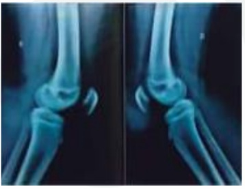
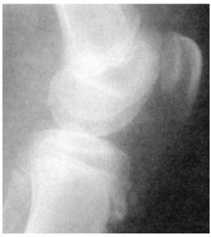
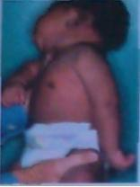

Recém-nascido de parto vaginal a fórceps apresenta reflexo de Moro assimétrico no primeiro dia de vida, com pouco movimento do braço esquerdo, que ca mantido em rotação interna ao lado do corpo com o antebraço estendido e em pronação. O restante do exame físico é normal, inclusive a preensão palmar da mãe esquerda. O provável diagnóstico é:
Revisar: possível letra faltando em enunciado
Um menino de doze anos de idade, com quadro de dor no joelho há um mês, após exercícios de corrida, não apresenta dores em outras articulações ao exame e não apresenta edema ou outros sinais ogísticos, apenas proeminência da tuberosidade anterior da tíbia, com dor à palpação do local. Com base nesse caso hipotético, o diagnóstico mais provável é o de
Adolescente de 14 anos, praticante de futebol, queixa-se de dor na região anterior do joelho esquerdo, que piora com a digitopressão e na subida e descida de rampas. Exame físico: aumento do volume local com tumefação do tubérculo tibial anterior. Radiografia simples de perfil: irregularidade e presença de ossículo junto à tuberosidade anterior da tíbia. A principal hipótese diagnóstica é:
Adolescente, sexo feminino, 13 anos, procura atendimento médico por dores nos joelhos. Relata que piora quando sobe ou desce escadas e ao praticar atividades físicas leves. Não há história de trauma, febre ou qualquer infecção viral. Ao exame físico apresenta ausência de sinais ogísticos, com dor à palpação da patela na região distal do fêmur bilateralmente, que piora com flexão dos quadríceps. A hipótese diagnóstica é:
Recém-nascido de termo, masculino, adequado para a idade gestacional, de 39 1/7 semanas, com peso de 4100g e estatura de 52 cm, nascido de parto vaginal, e mãe primigesta de 22 anos. Ao primeiro exame físico, sem anormalidades significativas, exceto por reflexo de moro assimétrico à direita, com membro superior direito com menos força, voltado medialmente, estendido e pronado. Baseado no diagnóstico principal, a conduta é:
Recém-nascido a termo, pesando 4.500g (grande para a idade gestacional), sofreu distocia durante parto vaginal, por difícil extração. Exame físico: rotação interna e adução do braço direito, perda do poder de abdução e pronação do antebraço ipsilateral. De acordo com este quadro, a hipótese diagnóstica mais provável é:
Menino de 12 anos, previamente hígido, apresenta dor no joelho direito há 3 semanas. Ele é atlético, joga basquete e pratica corrida de rua. Nega trauma recente. Descreve aumento da dor ao correr ou pular. Seu exame físico é normal, exceto por edema discreto e dor à palpação sobre a tuberosidade tibial direita. Baseado no caso acima, assinale a alternativa INCORRETA.
Adolescente de 15 anos de idade, do sexo masculino, realiza uma consulta com especialista, por apresentar quadro de dores de repetição na face anterior da tíbia direita, próximo ao joelho, além de di culdade de se movimentar na prática de futebol. Ao exame físico, apresenta edema e dor à palpação. Ao sair da consulta, o pediatra recomendou repouso e restrição das atividades, sem a prescrição de qualquer medicamento. Considerando-se o mencionado quadro clínico e os conhecimentos médicos relativos a ele, é correto afirmar que o diagnóstico mais provável para o caso é
Um adolescente de doze anos, masculino, queixa-se de dor na região infrapatelar direita há três semanas. Ele é esportista, pratica basquetebol e refere que a dor está relacionada ao esforço físico, principalmente após o treino. Refere que fez uso de anti- inflamatório não hormonal com pouca melhora. Devido à persistência do quadro de dor, cou em repouso com melhora. Ao exame, observa-se discreto edema e refere dor à palpação do tubérculo anterior da tíbia direita. O diagnóstico mais provável é:
Recém-nascido, parto normal, GIG, em avaliação no berçário, foi identi cado assimetria do reflexo de Moro. Em avaliação mais precisa, foi identi cado paralisia de predomínio distal do membro superior esquerdo, acompanhada por miose e ptose. O provável diagnóstico é:
Revisar: possível letra faltando em enunciado
A prática da ginástica olímpica na adolescência aumenta o risco de qual(is) tipo(s) de lesão caracteristicamente?
A paralisia obstétrica é definida como uma lesão por tração ou compressão do plexo braquial decorrente das manobras de parto. O recém-nascido que apresenta atitude de rotação interna, em pronação e com abdução ativa impossível, evidencia a paralisia:
A paralisia braquial obstétrica é o resultado de uma lesão das bras nervosas do plexo braquial durante as manobras obstétricas do parto. Quando essa paralisia é do tipo klumpke, é caracterizada por:
Adolescente de 14 anos joga basquete diariamente. Refere que há cerca de seis meses vem apresentando dor em ambos os joelhos durante os jogos. Ao exame físico, apresenta dor à palpação na tuberosidade anterior da tíbia, com aumento de volume local. Na imagem a seguir encontra-se a radiografia dos joelhos acometidos. Qual a principal hipótese diagnóstica?

Recém-nascido, peso de 4020 g, nascido de parto vaginal, com extração difícil na hora do parto, apresenta membro superior direito em adução e rotação interna do braço e pronação do antebraço. O reflexo de Moro é ausente deste lado e a preensão palmar é preservada. A hipótese diagnóstica mais provável é:
De ne-se paralisia obstétrica como sendo uma lesão do plexo braquial ao nascimento. A lesão é provocada pelo estiramento dos troncos nervosos ou avulsão radicular. A prevalência é variável na literatura chegando a 4,6 casos por mil nascidos vivos. A taxa de recuperação neurológica espontânea pode chegar a 90% dos casos. Qual a classificação mais usada nesta patologia que é muito valiosa na prática clínica e que proporciona uma visão geral do prognóstico e tratamento?
Adolescente de 14 anos de idade, praticante regular de esporte, apresentou quadro de dor e saliência na tuberosidade anterior da tíbia após atividade física. Qual é o diagnóstico mais provável?
Um paciente do sexo masculino, com 12 anos, apresenta dor espontânea e à palpação na região anterior da tíbia, há duas semanas. Não há febre ou outras manifestações sistêmicas. A imagem a seguir corresponde ao RX obtido no momento da consulta (VER IMAGEM). Para esse paciente, o diagnóstico mais provável é:

Recém-nascido, durante o exame físico deitado apresenta o membro superior direito em abdução e rotação interna do ombro, extensão do cotovelo e flexão do punho. Esta postura é sugestiva de lesão associada à:
Assinale o caso clínico em que você espera diagnosticar a Doença de Osgood- Schlatter:
Paciente de 13 anos de idade, sexo masculino, queixa-se de dor em região anterior do joelho direito. Ele pratica handebol 3 vezes por semana. A radiografia do joelho mostra um ossículo na inserção do ligamento patelar junto à tuberosidade anterior da tíbia. A hipótese diagnóstica mais provável é:
Observe a imagem abaixo de um recém-nascido com alguns dias de vida e assinale a assertiva correta em relação à lesão apresentada.

Um recém-nato nascido de parto normal, mas com di culdade na extração do ombro direito que obrigou o obstetra a fraturar a clavícula homolateral, pode apresentar alteração do plexo braquial. Semiologicamente essa criança não apresentará o seguinte reflexo:
Menino, 9 anos, chega ao posto de saúde com dor no joelho direito há pouco mais de dois meses, sem história de trauma local. Mãe se mostra preocupada, pois observou inchaço no local da dor, que impede o lho de continuar os treinamentos no time de futebol do clube. Ao exame físico, foram constatados edema e dor sobre a porção distal do tendão patelar. A radiogra a do joelho foi normal. O médico orientou a mãe a deixar a criança em repouso, e afastar-se temporariamente do vôlei e a realizar fisioterapia. Assinale a opção que se ajusta ao diagnóstico provável:
Menino, 9 anos, chega ao posto de saúde com dor no joelho direito há pouco mais de dois meses, sem história de trauma local. Mãe se mostra preocupada, pois observou inchaço no local da dor, que impede o lho de continuar os treinamentos no time de futebol do clube. Ao exame físico, foram constatados edema e dor sobre a porção distal do tendão patelar. A radiogra a do joelho foi normal. O médico orientou a mãe a deixar a criança em repouso, afastar-se temporariamente do vôlei e a realizar fisioterapia. O quadro clínico sugere:
Mariana, 13 anos, chega ao ambulatório queixando-se de "dor no joelho", preocupada em participar da maratona para qual vem se preparando "há meses". O exame físico revela dor mal localizada na face anterior do joelho direito, sem sinais ogísticos, crepitações ou quaisquer outros sinais. A radiogra a não evidenciou anormalidades. Com base na principal hipótese diagnóstica, é CORRETO afirmar que:
O que é doença de Osgood-Schlatter?
As osteocondroses são frequentes na idade escolar e na adolescência, sendo causas de dores nos membros inferiores. A que acomete a tuberosidade anterior da tíbia é conhecida como:
Um RN foi atendido pelo neonatologista, que notou ao exame: criança com 4 kg e ausência de movimentos ativos do membro superior esquerdo (MSE), do ombro até a mão, com reflexo de Moro ausente, ptose palpebral, enoftalmia e miose à esquerda. O diagnóstico mais provável para esse caso é:
Paciente do sexo masculino, 13 anos, com queixa de 1 ano de duração de edema e dor discreta no joelho direito, que ocorrem após a prática esportiva. Não há relato de episódio traumático agudo. O exame físico revela atro a muscular discreta da coxa e dor ao movimento passivo de rotação interna durante a extensão. Considerando esse quadro clínico, os exames de imagem mais indicados para a confirmação do diagnóstico são:
Paciente do sexo masculino, 13 anos, com queixa de 1 ano de duração de edema e dor discreta no joelho direito, que ocorrem após a prática esportiva. Não há relato de episódio traumático agudo. O exame físico revela atro a muscular discreta da coxa e dor ao movimento passivo de rotação interna durante a extensão. Essa história clínica e esses dados de exame físico são sugestivos de: Respostas: 1 12 23